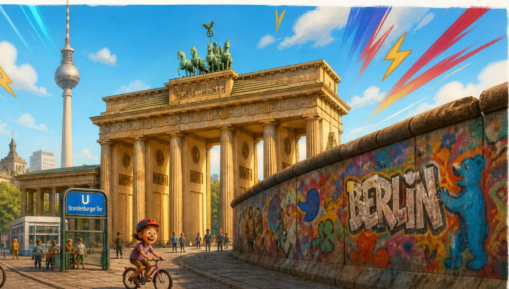
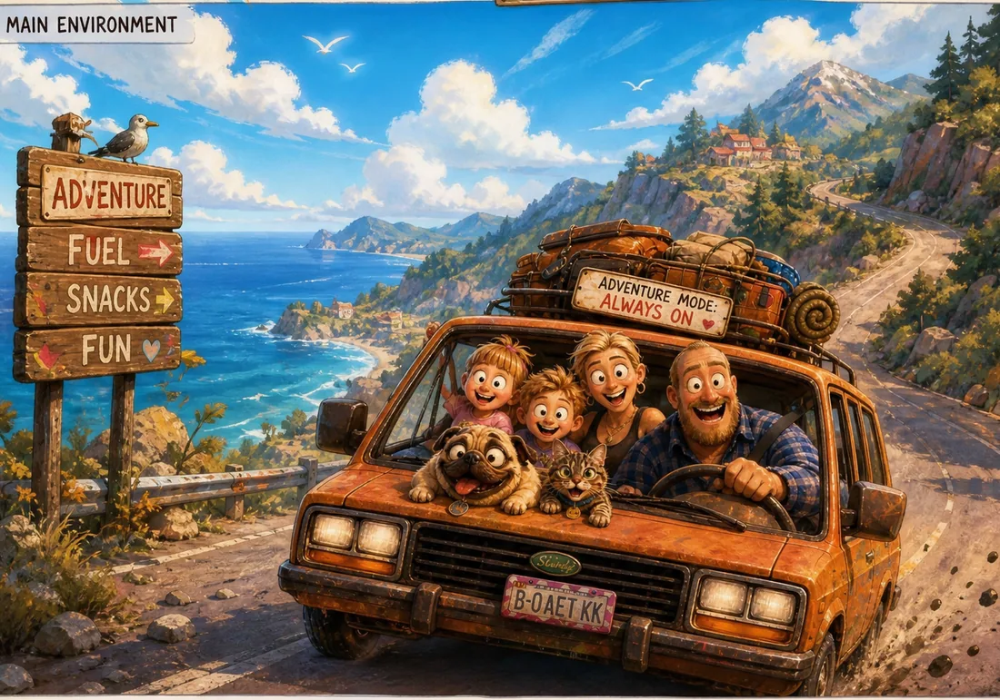

Variant D · editorial
Kiez-Magazin
Wochenzeitungs-Cover mit Ken-Burns-Aufmacher, Rubrik-Karten, Drop-Cap und Bildunterschriften. Serif trifft Kiosk-Rot.
AnsehenAlle light, schnell, in Tonis Stimme und ohne Tracking. Runde 1 (A bis C) ist textpur. Runde 2 (D bis F) ist magazinig: eigene Illustrationen aus der klarekante-Bildwelt, dezente Animationen, mehr Bühne. Details stehen im README.

Variant D · editorial
Wochenzeitungs-Cover mit Ken-Burns-Aufmacher, Rubrik-Karten, Drop-Cap und Bildunterschriften. Serif trifft Kiosk-Rot.
Ansehen
Variant E · gewählt, ausgebaut
Die gewählte Richtung, jetzt mit echtem Inhalt: echtes Manifest und Über-mich, Garten-Szene als Folge 1, Videos-Seite mit Pilotfolge und Transkript, Kids-Teaser.
Ansehen
Variant F · ruhig
Strenges Raster, nummerierte Beiträge, Bildunterschriften, Sticky-Header, Lesefortschritt. Modern und gelassen.
Ansehen| Kriterium | D · Kiez-Magazin | E · Bunte Beilage | F · Studio-Magazin |
|---|---|---|---|
| Lautstärke | Mittel | Laut | Leise |
| Typo | Serif + Grotesk | Grotesk, fett | Sans, streng |
| Bildsprache | Cover und Rubriken | Polaroids und Sticker | Raster und Captions |
| Animation | Ken Burns, Reveals, Hover-Zoom | Laufband, Schweben, Kipp-Karten | Reveals, Lesefortschritt, Sticky-Header |
| Akzent | Kiosk-Rot #C8362F | Orange #E8590C + Gelb #F5C518 | Mauer-Blau #6F8896 |
Variant A · editorial
Editorial wie eine kluge Wochenzeitung. Serif-Body, Grotesk-Headlines, zwei Spalten, Drop-Cap.
AnsehenVariant B · laut
Brutalist und bewusst roh. Mono-Stempel, harte Linien, Neon-Gelb als einziger Farbtupfer.
AnsehenVariant C · leise
Minimal, einspaltig, viel Luft, ein Sans-Serif. Das Design tritt zurück, die Texte tragen.
AnsehenJede Variant hat 8 Seiten: Startseite, Geschichten-Index, Einzelbeitrag, Manifest, Über mich, Kontakt, Impressum & Datenschutz, 404. Alle Bilder sind eigene Illustrationen aus der klarekante-Bildwelt (Ordner klarekante-style), als WebP komprimiert. Animationen respektieren prefers-reduced-motion, ohne JavaScript bleibt alles lesbar.